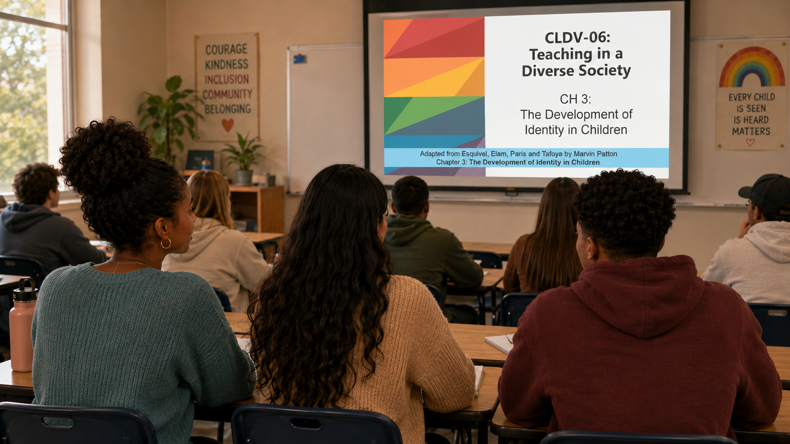

Identity begins early
🔎 Choose the strongest response
Which statement best reflects the chapter’s view of identity development?
Self-identity, social identity, peers, play, culture, and classroom messages

Jordan: “I usually think of identity as something people figure out when they’re older. Do young children really think about identity?”
Aaliyah: “Maybe not in the same way adults do. But young children are already noticing language, skin color, gender, family structure, ability, and who seems to belong.”
Maya: “So when children choose roles in pretend play, compare themselves to peers, or hear comments from adults, they may be learning messages about who they are.”
Aaliyah: “Those messages can support pride and belonging, or make a child feel invisible or less valued.”
Jordan: “So identity development is not just happening inside the child. It’s also shaped by relationships, classroom materials, peer interactions, and culture.”
Maya: “Children are always learning who they are—and we need to pay attention to what our classrooms are teaching them.”
Which statement best reflects the chapter’s view of identity development?
Match each concept with the best description.
Which outcome is most closely connected to peer interaction?
Why is play important for identity development?
A classroom library rarely shows children who share one child’s family structure. What is the most responsive action?
A child is excluded from pretend play because peers say, “Only boys can be firefighters.” What should the teacher do?
Which statement best describes culture’s role in identity?
Which teacher response best supports a child’s developing identity?
Which statement best integrates Esquivel Chapter 3?
One message I want every child to receive from my classroom is…
Identity develops through personal awareness and repeated social experiences, not only through explicit lessons.
Did your response include belonging, pride, capability, family, culture, language, gender, or ability?
Teacher language, peer dynamics, classroom routines, materials, and play opportunities all communicate who is valued.